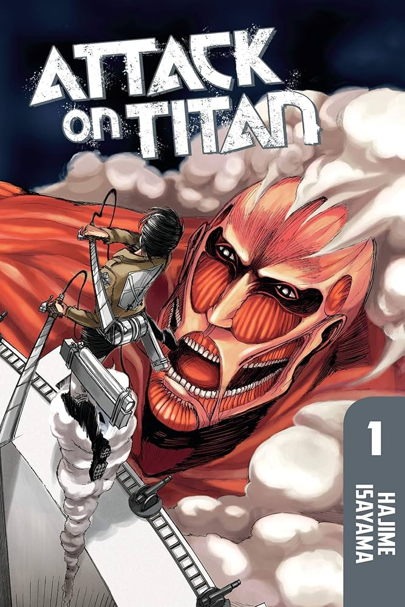
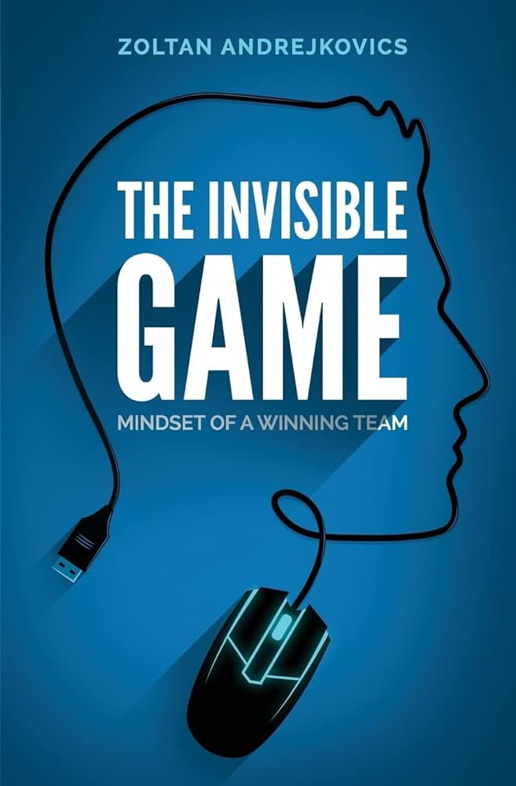
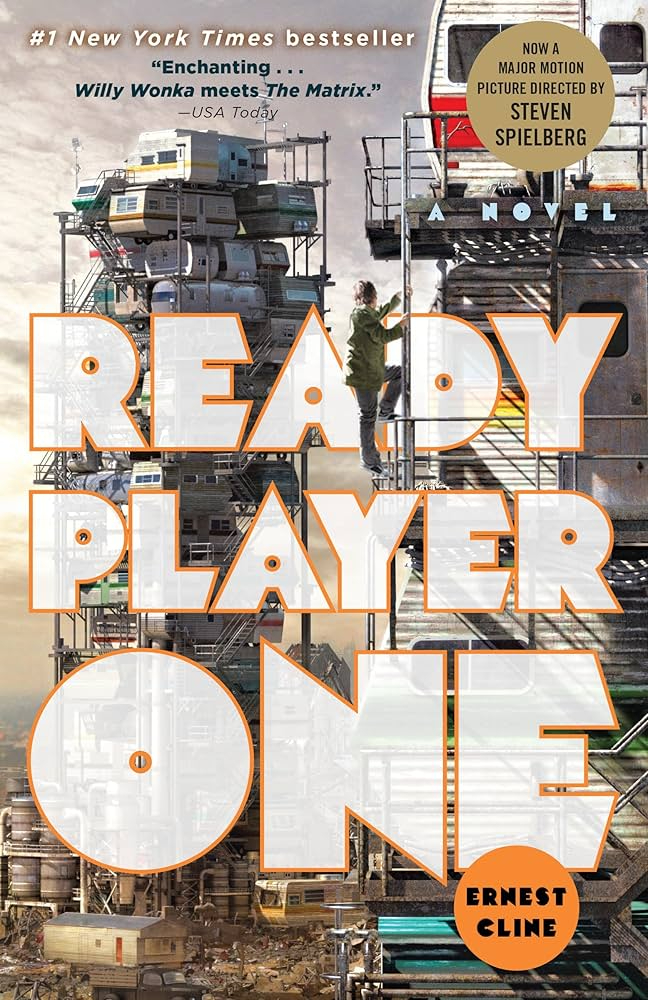
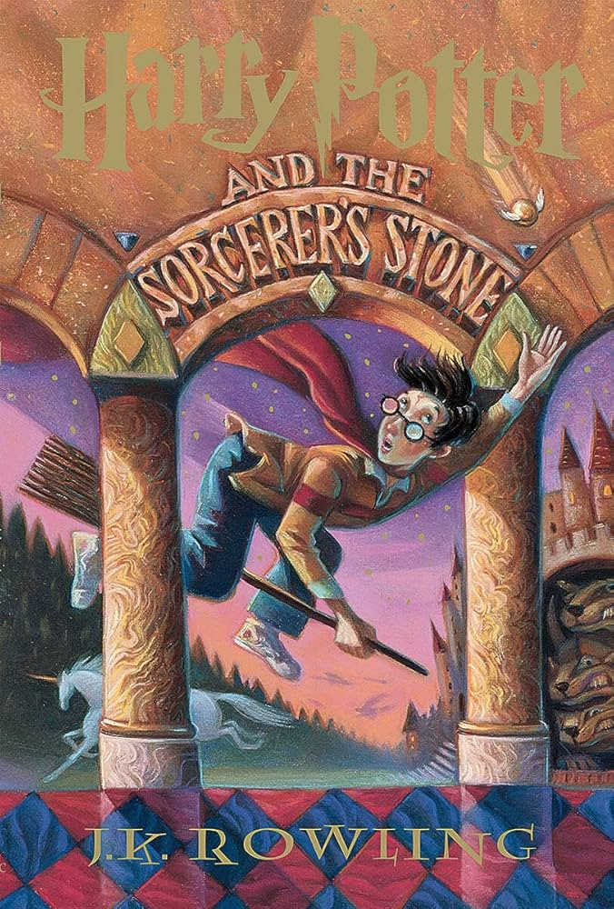

The most recent trip that I have taken was a long time ago but it was to India to visit family. Each day was visting a different part and also trying out all the different food vendors whether that was street food or restaurants. Favorite part as always was feeding the monkeys bread which I still find strange cause we usually think bananas with monkeys but it is always fun.
I chose this restaurant because I really like cheesecake and according to their name, this is the birthplace of cheesecake.
Photo by Jennifer Kalenberg on Unsplash
| Attack on Titan | The Invisible Game | Ready Player One | Harry Potter and the Sorcerer's Stone |
|---|---|---|---|
| Hajime Isayama | Zoltan Andrejkovics | Ernest Cline | J.K. Rowling |
|  |  |  |  |
| Humanity is trapped within walls as giant man eating creatures called titans keep them in. Eren Jaeger's hometown is destroyed and he vows to kill all of the titans caging them in. | Explains the mindset for a team to have while competing in an ESport and what strategies are good and better to employ for teams. | The creator of the OASIS, a virtual world passes away and leaves behind a treasure hunt. Whoever wins the hunt will gain full control of the OASIS and the fortune the creator had. | Harry Potter, an orphan living with not so nice aunt and uncle learns that he is a wizard and discovers the truth about himself and his family. |